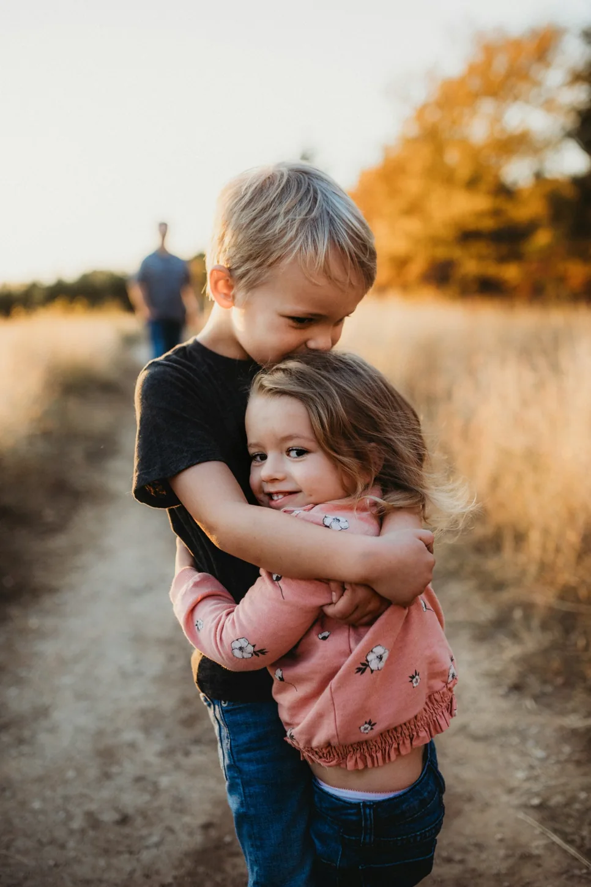
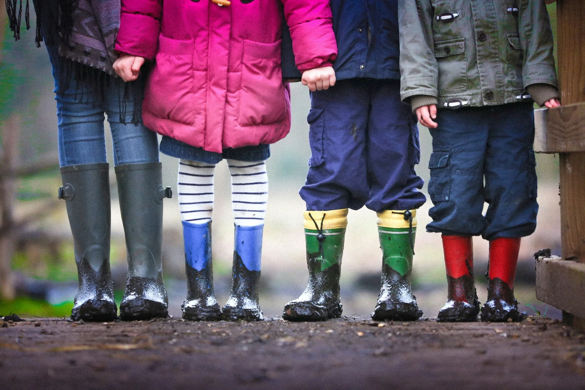
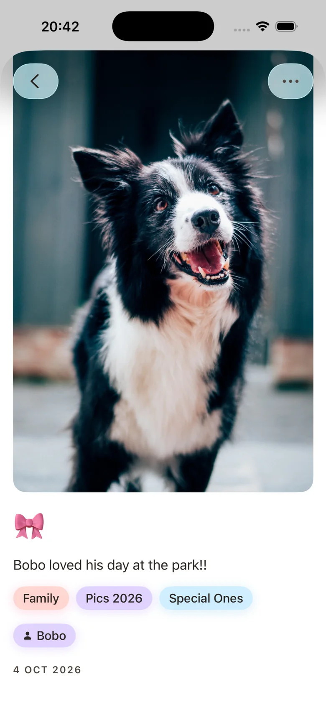
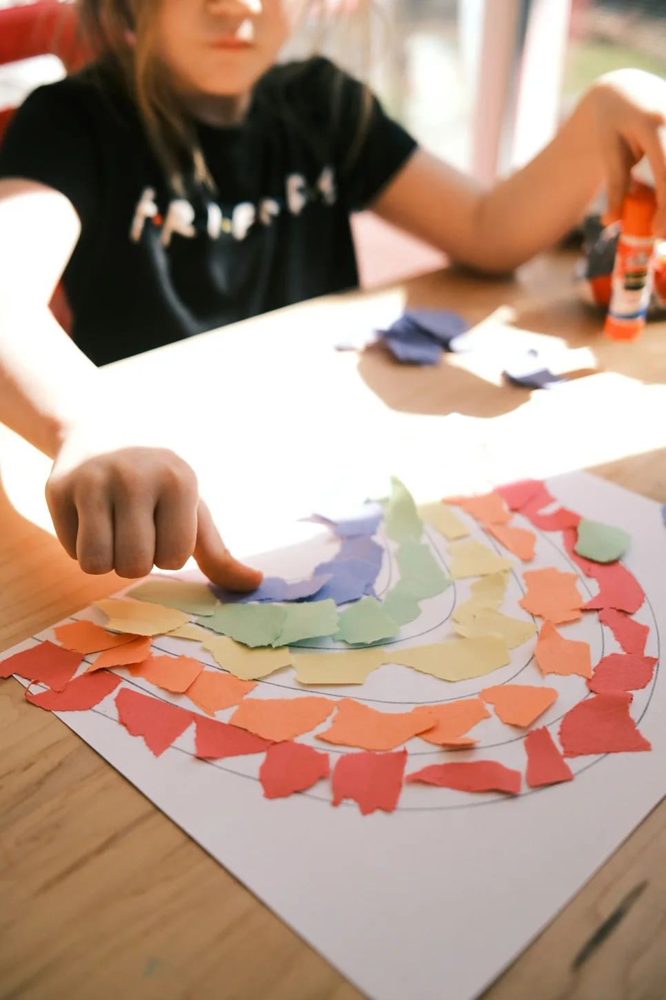
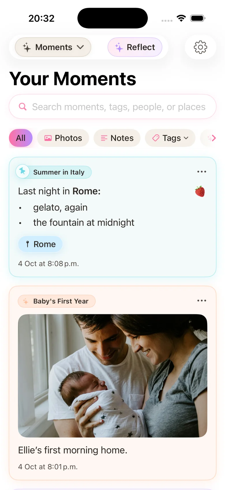

Family moments & childhood memories
A family memory journal for the days you want to remember.
The ordinary days become the family stories.
Not every memory needs a milestone. Muddy boots, kitchen-table masterpieces and a familiar hug are often the pictures that mean the most years later.
Start your journal on iPhone ↗Private photo memories, in chapters called Eras.

Notice the details you would otherwise forget.
Children change, routines disappear, and family jokes move on. Saving a few specifics today means you will not have to rely on a photograph to explain everything later.
- Record the exact words behind a funny saying.
- Capture an after-school ritual or a favourite rainy-day activity.
- Take a picture of the artwork before it leaves the fridge.

A simple starting point
Try this in your own journal
Choose one recurring moment: Sunday pancakes, the dog walk or the way everyone settles in after school.
Quote what someone actually said, even when the grammar is delightfully wrong.
A blurry candid plus one true sentence often tells more than a polished portrait.
Inside Stillkeep
A whole story in a single photo.
Your family journal can include the dog’s favourite park, a messy art afternoon or a funny remark at dinner. Add a short note and the memory is more than a picture.

Give the everyday its own place.
Family stories are about belonging, not only birthdays and holidays. A shared evening, a handmade gift, or the family dog’s latest adventure can matter just as much.
- Remember the pets who grew up alongside everyone.
- Keep little traditions as they evolve, rather than waiting for a special occasion.
- Make room for quiet moments as well as celebrations.

Inside Stillkeep
Find the everyday stories again.
Your Moments bring photos and notes together in a browsable feed. Family stories can live alongside trips and everyday observations instead of getting lost in a camera roll.

Explore another chapter
Every kind of life has moments worth keeping.
Find a way to tell the story that matters to you.